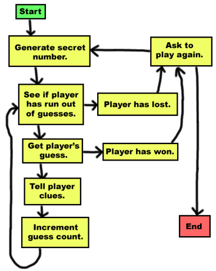
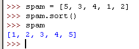
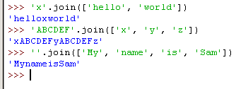
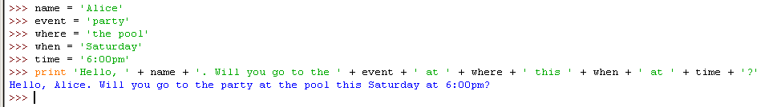
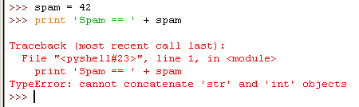
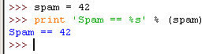

Bagels is a simple game you can play with a friend. Your friend thinks up a random 3-digit number, and you try to guess what the number is. After each guess, your friend gives you clues. If the friend tells you "bagels", that means that none of the three digits is in the secret number. If your friend tells you "pico", then one of the digits is in the secret number, but your guess has the digit in the wrong place. If your friend tells you "fermi", then your guess has a correct digit in the correct place. Of course, even if you get a pico or fermi clue, you still don't know which digit in your guess is the correct one.
You can also get multiple clues after each guess. Say the secret number is 456, and your guess is 546. The clue you get would be "fermi pico pico" because one digit is correct and in the correct place, and two digits are in the secret number but in the wrong place.
I am thinking of a 3-digit number. Try to guess what it is.
Here are some clues:
When I say: That means:
Pico One digit is correct but in the wrong position.
Fermi One digit is correct and in the right position.
Bagels No digit is correct.
I have thought up a number. You have 10 guesses to get it.
Guess #1:
123
Fermi
Guess #2:
453
Pico
Guess #3:
425
Fermi
Guess #4:
326
Bagels
Guess #5:
489
Bagels
Guess #6:
075
Fermi Fermi
Guess #7:
015
Fermi Pico
Guess #8:
175
You got it!
Do you want to play again? (yes or no)
no
bagels.py
- import random
- def getSecretNum(numDigits):
- # Returns a string that is numDigits long, made up of random digits.
- secretNum = ''
- for i in range(numDigits):
- secretNum += random.choice('0 1 2 3 4 5 6 7 8 9'.split())
- return secretNum
- def getClues(guess, secretNum):
- # Returns a string with the pico, fermi, bagels clues to the user.
- if guess == secretNum:
- return 'You got it!'
- clue = []
- for i in range(len(guess)):
- if guess[i] == secretNum[i]:
- clue.append('Fermi')
- elif guess[i] in secretNum:
- clue.append('Pico')
- if len(clue) == 0:
- return 'Bagels'
- clue.sort()
- return ' '.join(clue)
- def isOnlyDigits(num):
- # Returns True if num is a string made up only of digits. Otherwise returns False.
- if num == '':
- return False
- for i in num:
- if i not in '0 1 2 3 4 5 6 7 8 9'.split():
- return False
- return True
- def playAgain():
- # This function returns True if the player wants to play again, otherwise it returns False.
- print 'Do you want to play again? (yes or no)'
- return raw_input().lower().startswith('y')
- NUMDIGITS = 3
- MAXGUESS = 10
- print 'I am thinking of a %s-digit number. Try to guess what it is.' % (NUMDIGITS)
- print 'Here are some clues:'
- print 'When I say: That means:'
- print ' Pico One digit is correct but in the wrong position.'
- print ' Fermi One digit is correct and in the right position.'
- print ' Bagels No digit is correct.'
- while True:
- secretNum = getSecretNum(NUMDIGITS)
- print 'I have thought up a number. You have %s guesses to get it.' % (MAXGUESS)
- numGuesses = 1
- while numGuesses <= MAXGUESS:
- guess = ''
- while len(guess) != NUMDIGITS or not isOnlyDigits(guess):
- print 'Guess #%s: ' % (numGuesses)
- guess = raw_input()
- clue = getClues(guess, secretNum)
- print clue
- numGuesses += 1
- if guess == secretNum:
- break
- if numGuesses > MAXGUESS:
- print 'You ran out of guesses. The answer was %s.' % (secretNum)
- if not playAgain():
- break
Here is a flow chart for this program. The flow chart describes the basic events of what happens in this game, and in what order they can happen:

And here is the source code for our game. Start a new file and type the code in, and then save the file with the "bagels.py" name. We will design our game so that it is very easy to change the size of the secret number. It can be 3 digits or 5 digits or 30 digits. We will do this by using a constant variable named NUMDIGITS instead of hard-coding the integer 3 into our source code.
Hard-coding means writing a program in a way that it changing the behavior of the program requires changing a lot of the source code. For example, we could hard-code a name into a print statement like: print 'Hello, Albert'. Or we could use this line: print 'Hello, ' + name which would let us change the name that is printed by changing the name variable.
- import random
This game imports the random module so we can use it's random numbers function.
- def getSecretNum(numDigits):
- # Returns a string that is numDigits long, made up of random digits.
- secretNum = ''
- for i in range(numDigits):
- secretNum += random.choice('0 1 2 3 4 5 6 7 8 9'.split())
- return secretNum
Our first function is named getSecretNum(), which will generate the random secret number. Instead of having the code only produce 3-digit numbers, we use a parameter named numDigits to tell us how many digits the secret number should have.
You may notice that secretNum in this function is a string, not an integer. This may seem odd, but remember that our secret number could be something like '007'. If we stored this as an integer, it would look like 7 which would make it harder to work with in our program.
This function is simple. The secretNum variable starts out as a blank string. We then loop a number of times equal to the integer value in numDigits. On each iteration through the loop, a new random digit is concatenated to the end of secretNum. So if numDigits is 3, the loop will iterate three times and three random digits will be concatenated. (Remember, the random.choice() function returns a randomly chosen item from the list it is passed as an argument. '0 1 2 3 4 5 6 7 8 9' is a string, but the split() method called on it converts it into a list.)
The += operator is new. This is called an augmented assignment operator. Normally, if you wanted to add or concatenate a value to a variable, you would use code that looked like this:
spam = 42
spam = spam + 10
cheese = 'Hello '
cheese = cheese + 'world!'
After running the above code, spam would have the value 52 and cheese would have the value 'Hello world!'. The augmented assignment operators are a shortcut that frees you from retyping the variable name. The following code does the exact same thing as the above code:
spam = 42
spam += 10 # Same as spam = spam + 10
cheese = 'Hello '
cheese += 'world!' # Same as cheese = cheese + 'world!'
There are other augmented assignment operators. -= will subtract a value from an integer. *= will multiply the variable by a value. /= will divide a variable by a value. Notice that these augmented assignment operators do the same math operations as the -, *, and / operators. Augmented assignment operators are a neat shortcut.
- def getClues(guess, secretNum):
- # Returns a string with the pico, fermi, bagels clues to the user.
- if guess == secretNum:
- return 'You got it!'
The getClues() function will return a string with the fermi, pico, and bagels clue, depending on what it is passed for the guess and secretNum parameters. The most obvious and easiest step is to check if the guess is the exact same as the secret number. In that case, we can just return 'You got it!'.
- clue = []
- for i in range(len(guess)):
- if guess[i] == secretNum[i]:
- clue.append('Fermi')
- elif guess[i] in secretNum:
- clue.append('Pico')
If the guess is not the exact same as the secret number, we need to figure out what clues to give the player. First we'll set up a list named clue, which we will add the strings 'Fermi' and 'Pico' as needed. We will combine the strings in this list into a single string to return.
We do this by looping through each possible index in guess and secretNum. We will assume that guess and secretNum are the same size (we can guarantee this in the code that calls getClues().) The if statement checks if the first, second, third, etc. (depending on the value of i being 0, 1, 2, etc.) letter of guess is the same as the number in the same position in secretNum. If so, we will add a string 'Fermi' to clue.
If that condition is False we will check if the number at that position in guess exists in secretNum. If this condition is True we know that the number is somewhere in the secret number but not in the same position. This is why we add the 'Pico' to clue.
- if len(clue) == 0:
- return 'Bagels'
If we go through the entire for loop above and never add anything to the clue list, then we know that there are no correct digits at all in guess. In this case, we should just return the string 'Bagels' as our only clue.
- clue.sort()
Lists have a method named sort() that rearranges the items in the list to be in alphabetical order. Try typing the following into the interactive shell:
spam = [5, 3, 4, 1, 2]
spam.sort()
spam

Notice that the sort() method does not return a sorted list, but rather just sorts the list it is called on. You would never want to use this line of code: return spam.sort() because that would return the value None (which is what sort() returns). Instead you would want a separate line spam.sort() and then the line return spam.
The reason we want to sort the clue list is because we might return extra clues that we did not intend based on the order of the clues. If clue had the value ['Pico', 'Fermi', 'Pico'], that would tell us that the center digit of our guess is in the correct position. Since the other two clues are both Pico, then we know that all we have to do is swap the first and third digit and we have the secret number. But if the clues are always sorted in alphabetical order, the player would not know which number the Fermi clue refers to.
- return ' '.join(clue)
The join() string method returns a string of each item in the list argument joined together. The string that the method is called on (on line 27, this is a single space, ' ') appears in between each item in the list. So the string that is returned on line 27 is each string in clue combined together with a single space in between each string.
For an example, type the following into the interactive shell:
'x'.join(['hello', 'world'])
'ABCDEF'.join(['x', 'y', 'z'])
''.join(['My', 'name', 'is', 'Sam'])

- def isOnlyDigits(num):
- # Returns True if num is a string made up only of digits. Otherwise returns False.
- if num == '':
- return False
The isOnlyDigits() is a small function that will help us determine if the player entered a guess that was only made up of numbers. To do this, we will check each individual letter in the string named num and make sure it is a number.
Line 31 does a quick check to see if we were sent the blank string, and if so, we return False.
- for i in num:
- if i not in '0 1 2 3 4 5 6 7 8 9'.split():
- return False
- return True
We use a for loop on the string num. The value of i will have a single character from the num string on each iteration. Inside the for-block, we check if i does not exist in the list returned by '0 1 2 3 4 5 6 7 8 9'.split(). If it doesn't, we know that there is a character in num that is something besides a number. In that case, we should return the value False.
If execution continues past the for loop, then we know that every character in num is a number. So we return the value True.
- def playAgain():
- # This function returns True if the player wants to play again, otherwise it returns False.
- print 'Do you want to play again? (yes or no)'
- return raw_input().lower().startswith('y')
The playAgain() function is the same one we used in Hangman and Tic Tac Toe. The long expression on line 43 will evaluate to either True or False. The return value from the call to the raw_input() function is a string that has its lower() method called on it. The lower() method returns another string (the lowercase string) and that string has its startswith() method called on it, passing the argument 'y'.
- NUMDIGITS = 3
- MAXGUESS = 10
- print 'I am thinking of a %s-digit number. Try to guess what it is.' % (NUMDIGITS)
- print 'Here are some clues:'
- print 'When I say: That means:'
- print ' Pico One digit is correct but in the wrong position.'
- print ' Fermi One digit is correct and in the right position.'
- print ' Bagels No digit is correct.'
This is the actual start of the program. Instead of hard-coding three digits as the size of the secret number, we will use the constant variable NUMDIGITS. And instead of hard-coding a maximum of ten guesses that the player can make, we will use the constant variable MAXGUESS. (This is because if we increase the number of digits the secret number has, we also might want to give the player more guesses. We put the variable names in all capitals to show they are constant by convention.)
The print statements will tell the player the rules of the game and what the Pico, Fermi, and Bagels clues mean. Line 48's print statement has the code % (NUMDIGITS) added to the end and %s inside the string. This is a technique know as string interpolation.
String interpolation is another shortcut, like augmented assignment operators. Normally, if you want to use the string values inside variables in another string, you have to use the + concatenation operator:
name = 'Alice'
event = 'party'
where = 'the pool'
when = 'Saturday'
time = '6:00pm'
print 'Hello, ' + name + '. Will you go to the ' + event + ' at ' + where + ' this ' + when + ' at ' + time + '?'

As you can see, it can be very hard to type a line that concatenates several strings together. Instead, you can use string interpolation, which lets you put placeholders like %s (these placeholders are called conversion specifiers), and then put all the variable names at the end. Each %s is replaced with the value in the variable at the end of the line. For example, the following code does the same thing as the above code:
name = 'Alice'
event = 'party'
where = 'the pool'
when = 'Saturday'
time = '6:00pm'
print 'Hello, %s. Will you go to the %s at %s this %s at %s?' % (name, event, where, when, time)
String interpolation can make your code much easier to type and read, rather than using several + concatenation operators.
The final line has the print keyword, followed by the string with conversion specifiers, followed by the % sign, followed by a set of parentheses with the variables in them. The first variable name will be used for the first %s, the second variable with the second %s and so on. The Python interpreter will give you an error if you do not have the same number of %s conversion specifiers as you have variables.
Another benefit of using string interpolation instead of string concatenation is that interpolation works with any data type, not just strings. All values are automatically converted to the string data type. (This is what the s in %s stands for.) If you typed this code into the shell, you'd get an error:
spam = 42
print 'Spam == ' + spam

You get this error because string concatenation can only combine two strings, and spam is an integer. You would have to remember to put str(spam) in there instead. But with string interpolation, you can have any data type. Try typing this into the shell:
spam = 42
print 'Spam == %s' % (spam)

As you can see, using string interpolation instead of string concatenation is much easier because you don't have to worry about the data type of the variable. Also, string interpolation can be done on any strings, not just strings used in print statements.
String interpolation is also known as string formatting.
- while True:
- secretNum = getSecretNum(NUMDIGITS)
- print 'I have thought up a number. You have %s guesses to get it.' % (MAXGUESS)
- numGuesses = 1
- while numGuesses <= MAXGUESS:
We start with a while loop that has a condition of True, meaning it will loop forever until we execute a break statement. Inside the loop, we get a secret number from our getSecretNum() function (passing it NUMDIGITS to tell how many digits we want the secret number to have) and assign it to secretNum. Remember that secretNum is a string, not an integer.
We tell the player how many digits is in our secret number by using string interpolation instead of string concatenation. We set a variable numGuesses to 1, to denote that this is the first guess. Then we enter a new while loop which will keep looping as long as numGuesses is less than or equal to MAXGUESS.
Notice that this second while loop on line 60 is inside another while loop that started on line 55. Whenever we have these loops-inside-loops, we call them nested loops. You should know that any break or continue statements will only break or continue out of the innermost loop, and not any of the outer loops.
- guess = ''
- while len(guess) != NUMDIGITS or not isOnlyDigits(guess):
- print 'Guess #%s: ' % (numGuesses)
- guess = raw_input()
The guess variable will hold the player's guess. We will keep looping and asking the player for a guess until the player enters a guess that 1) has the same number of digits as the secret number and 2) is made up only of digits. This is what the while loop on line 62 is for. We set guess as the blank string on line 61 so that the while loop's condition is False the first time, ensuring that we enter the loop at least once.
- clue = getClues(guess, secretNum)
- print clue
- numGuesses += 1
After execution gets past the while loop on line 62, we know that guess contains a valid guess. We pass this and the secret number in secretNum to our getClues() function. It returns a string that contains our clues, which we will display to the player. We then increment numGuesses by 1 using the augmented assignment operator for addition.
- if guess == secretNum:
- break
- if numGuesses > MAXGUESS:
- print 'You ran out of guesses. The answer was %s.' % (secretNum)
If guess is the same value as secretNum, then we know the player has correctly guessed the secret number and we can break out of this loop (the while loop that was started on line 60). If not, then execution continues to line 72, where we check to see if the player ran out of guesses. If so, then we tell the player that they have lost and what the secret number was. We know that the condition for the while loop on line 55 will be False, so there is no need for a break statement.
At this point, execution jumps back to the while loop on line 60 where we let the player have another guess. If the player ran out of guesses (or we broke out of the loop with the break statement on line 71), then execution would proceed to line 75.
- if not playAgain():
- break
After leaving the while loop on line 60, we ask the player if want to play again by calling our playAgain() function. If playAgain() returns False, then we should break out of the while loop that was started on line 55. Since there is no more code after this loop, the program terminates.
If playAgain() returned True, then we would not execute the break statement and execution would jump back to line 55. A new secret number would be generated so that the player can play a new game.
Things Covered In This Chapter:
- Hard-coding
- Augmented Assignment Operators, +=, -=, *=, /=
- The sort() List Method
- The join() List Method
- String Interpolation (also called String Formatting)
- Conversion Specifier %s
- Nested Loops